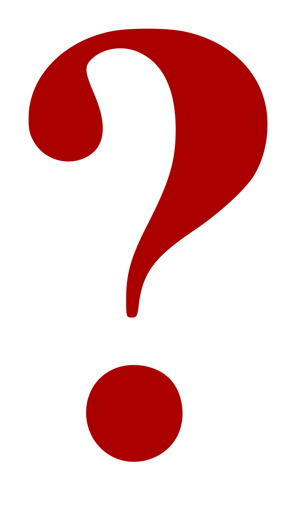
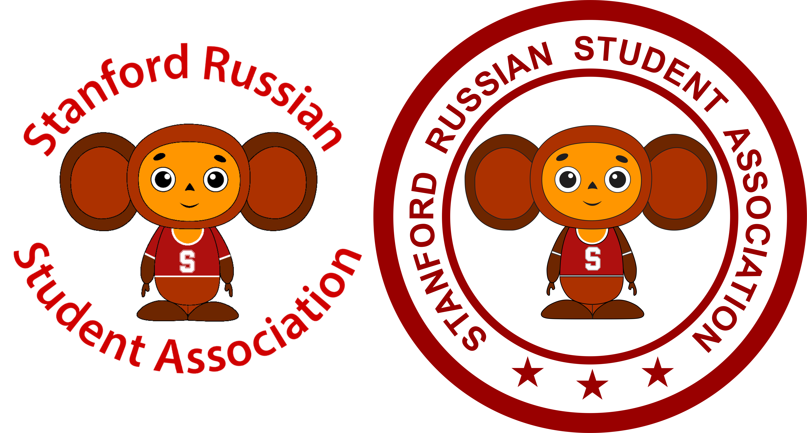
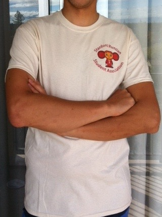
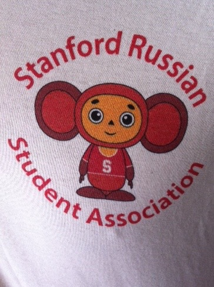
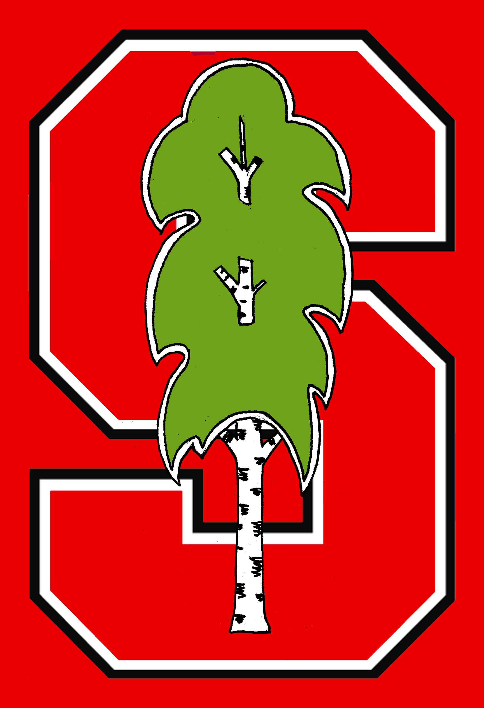
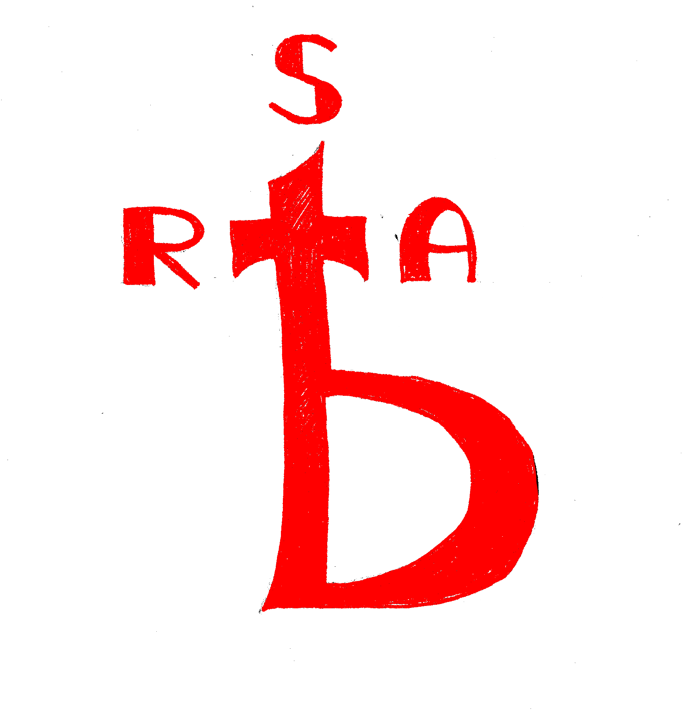
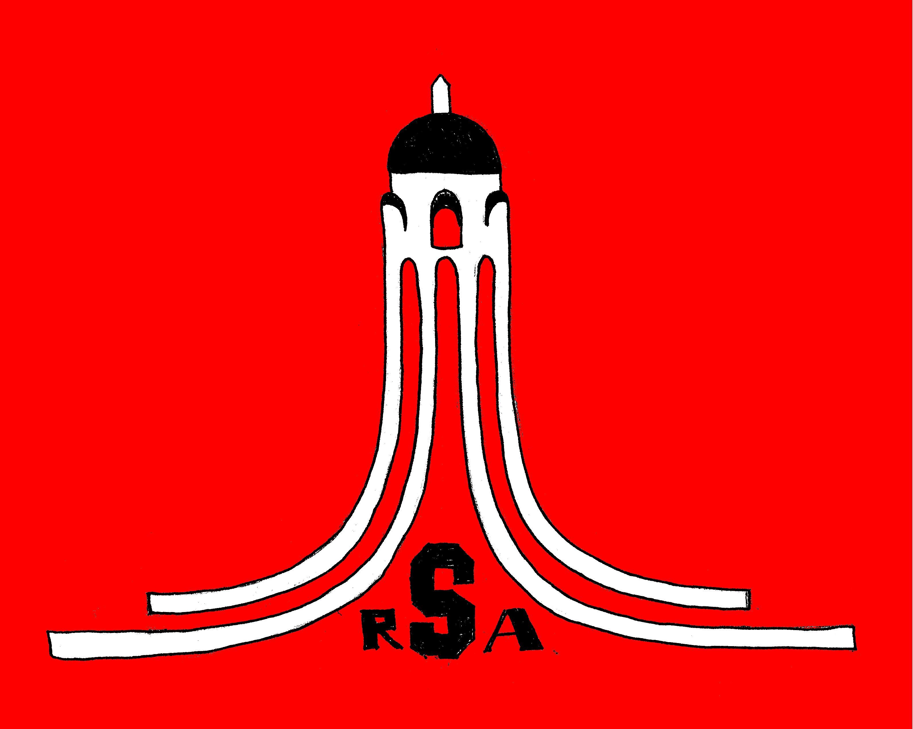
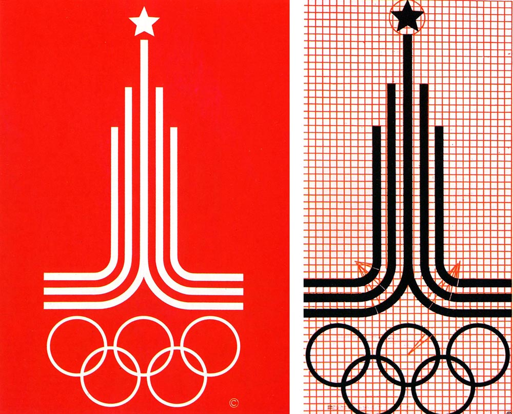
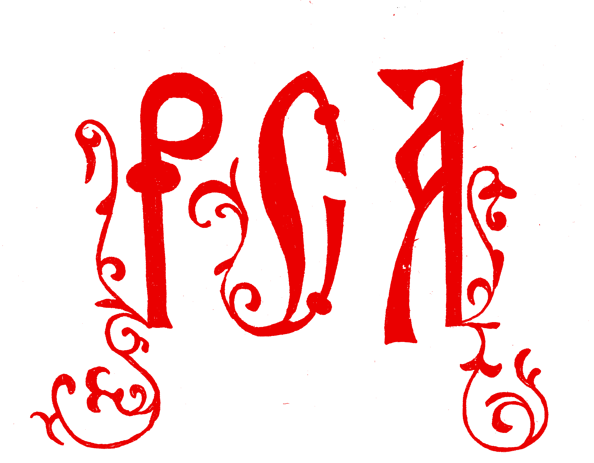

RSA LOGO IDEAS
1. Ваша идея | Присылайте любые идеи/наброски/комментарии к логотипу на адрес iskhakov at stanford dot edu или valerini at stanford dot edu |
2. Чебурашка | Чебурашка - образ эмигранта. Чебурашка приехал в ящике из-под апельсинов из далекой страны и нашел много новых друзей на новом месте. Чебурашка многие годы был символом русской олимпийской команды. Этот логотип был некоторое время неофициальным логотипом RSA. Павел Дуров получил футболку с ним.   Автор идеи: Валерия Николаенко Оформление: Ruslan Iskhakov |
3. Береза | Береза издревле была национальным символом, из нее делали лапти, веники, получали сок. Логотип вдохновлен Стэнфордской эмблемой, где изображен вместо березы redwood: Автор идеи: Валерия Николаенко |
4. Ять | RSA - это организация русскоязычных студентов, а значит главное, что связывает нас в организацию - это русский язык, ять - это символ дореволюционной орфографии русского языка. Автор идеи: Валерия Николаенко |
5. Hoover Tower | В 80х годах в Москве проходили олимпийские игры, одним из символов этих игр были пять олимпийских колец, переплетённых в основании, и устремлённые вверх линии, символизирующие спортивные дорожки, со звездой вверху — стилизация Спасской башни Кремля:  Hoover Tower - один из символов Стэнфорда, в ней располагается "Hoover Institution on War, Revolution, and Peace", который уделяет большое внимание России и странам бывшего СССР. Автор идеи: Валерия Николаенко |
6. Буквицы | Буквица - крупная первая буква главы, в рукописных книгах. Буквицы часто украшались миниатюрами и орнаментами. Написанная буквицами аббревиатура РСА (русскоязычная студенческая организация) исполнена в славянском стиле и напоминает об истоках русской словесности. Автор идеи: Валерия Николаенко |